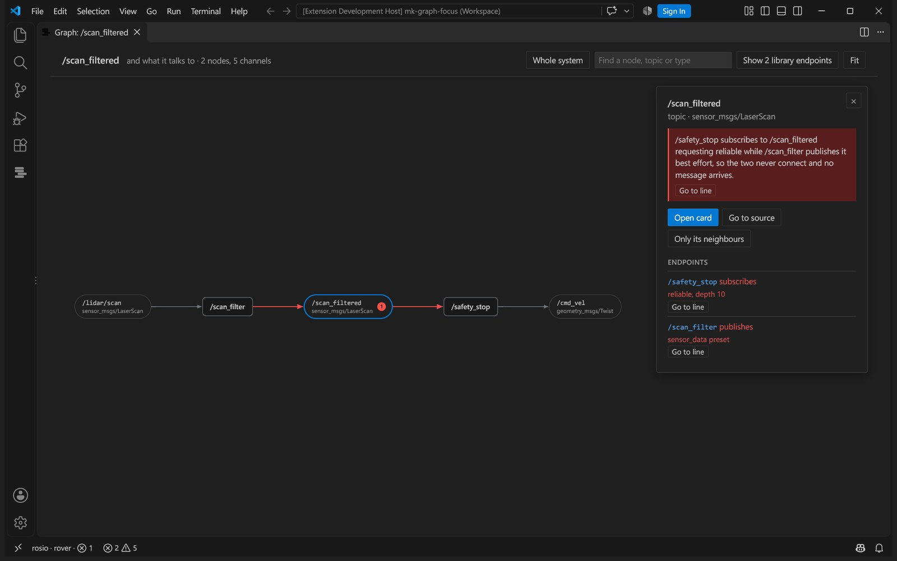
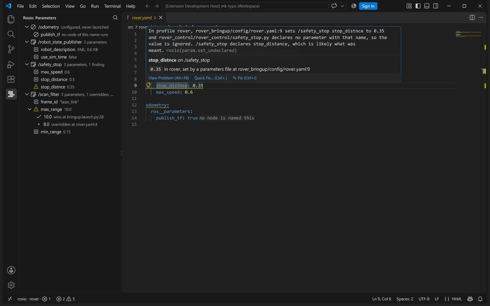
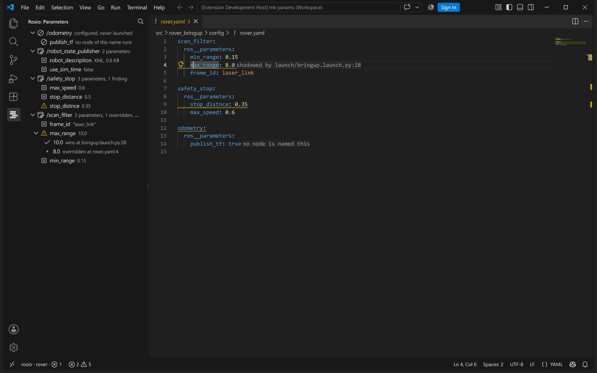
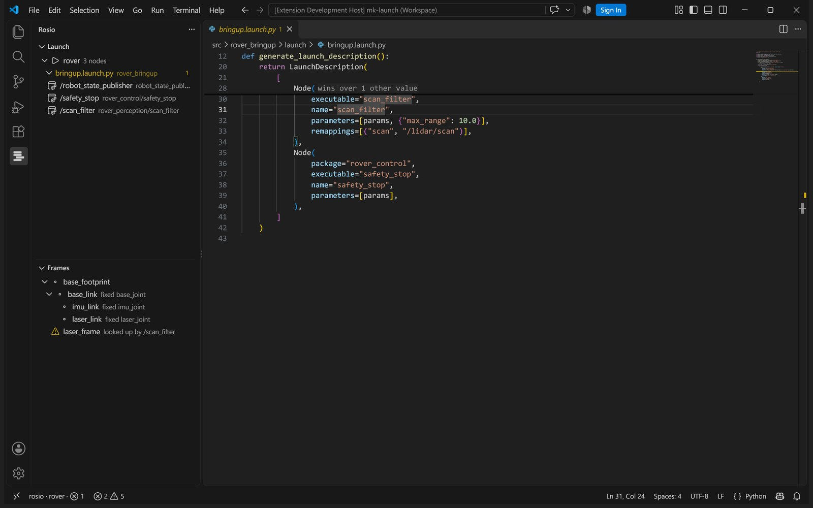
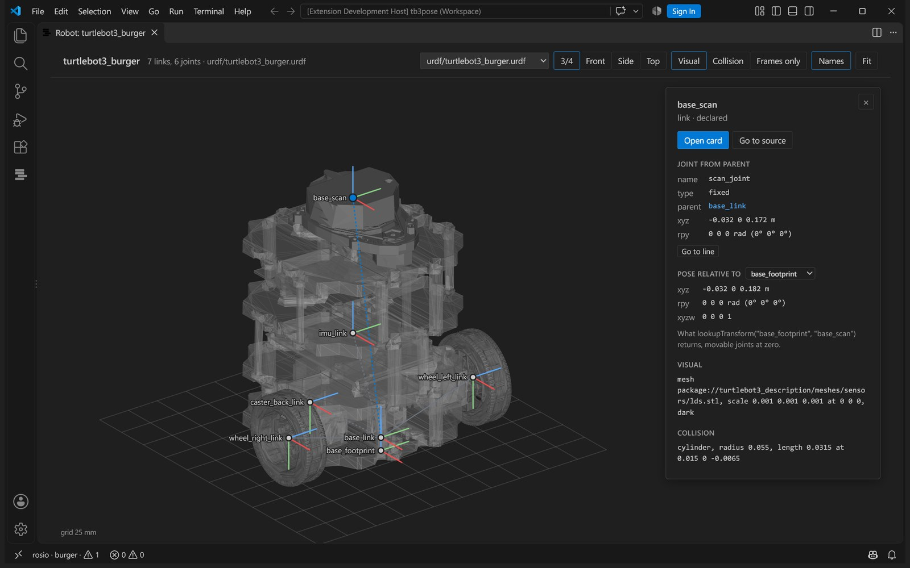
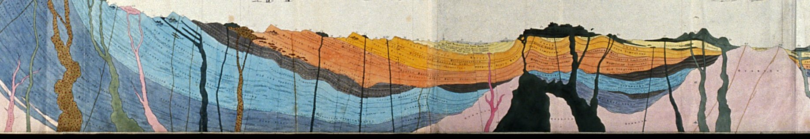
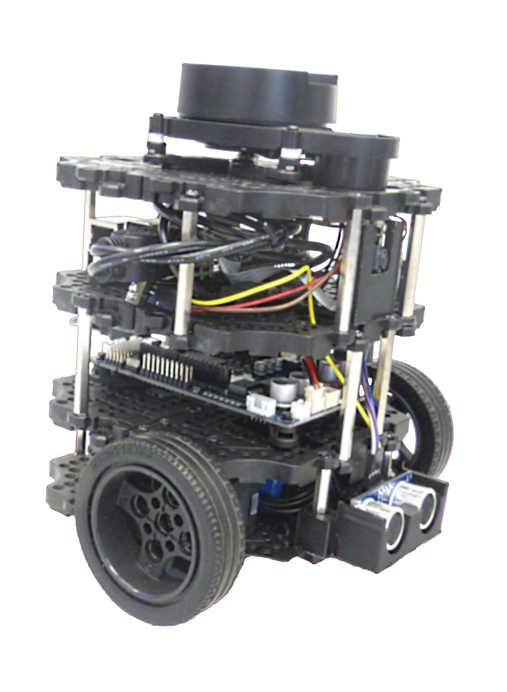

The example workspace in the repository ships with faults planted on purpose. This is what rosio drift says about it, worst first.
{{rover-drift}}
rosio reads a ROS 2 system four ways: launch files, source code, the running graph and recorded bags. It shows where they disagree and which line to edit.
Observed is out of line: what runs is not what the launch file says.
The example workspace in the repository ships with faults planted on purpose. This is what rosio drift says about it, worst first.
{{rover-drift}}
One finding in full: why it is true, what to change, and one sentence an agent can quote as it stands.
{{rover-explain}}
Stock nav2_bringup on jazzy. No yaml sets use_sim_time on the controller. A SetParameter in the launch file does, and rosio names that line.
{{nav2-param}}
Humble packages planned for lyrical. Every change carries its line and the upstream change behind it.
{{migrate}}
The same atlas over MCP: the overview tool, asked of stock nav2.
{{agent}}
Each check reads the joined atlas and names the value, the file and the line to edit.
stop_distnce is set for /safety_stop in rover.yaml:9 and never declared. /safety_stop declares stop_distance.
param.set_undeclared param.shadowed param.owner_name_mismatch
/safety_stop asks for reliable on /scan_filtered while /scan_filter offers best effort, so no message arrives.
qos.incompatible type.differ topic.no_publisher
scan_filter.cpp:34 looks up laser_frame. No robot model has it; the model has laser_link.
frame.not_in_urdf frame.no_publisher frame.parent_differs
In the simulation profile rviz runs on wall time while every other node uses simulated time.
param.sim_time_mixed time.backward time.frozen
Nothing drives /map_server through its lifecycle in this profile, so it stays unconfigured and never serves the map.
node.declared_not_observed lifecycle.unmanaged launch.file_not_installed
Two nodes in one profile run different RMW implementations, and one cannot reach the Zenoh router.
rmw.mixed zenoh.router_unreachable
When a value is built at run time and rosio cannot follow it, the atlas says so and keeps it on the list. It never fills in a default.
VS Code today, Zed through the same language server. The findings sit on the line they are about.







Each layer is read on its own, by its own collector. Launch files run in a sandbox; source code is parsed and never executed; the live probe and the bags are optional.
One id per node, topic, parameter and frame. Where two layers disagree inside one profile, the atlas keeps both values and says which won.
Findings come out worst first, each with the file and line to edit, a fix and a sentence a person or a small model can repeat.
atlas.json lives in git and diffs line by line.rosio drift --fail-on error is the CI gate. A waiver needs a reason, and a stale one is reported.rosio migrate lists what a move between two ROS 2 releases asks of your own packages: removed CMake calls, renamed headers, changed parameters. It rewrites what is mechanical, leaves the rest with a link to the upstream change, and builds the result in the target release's container.
humble · iron · jazzy · kilted · lyrical

rosio has no language model in it. Any agent, including a small local one, reads the same facts you do, one short answer at a time.
overview drift explain param_chain query path neighbours graph unresolved stamps transform migrate
$ rosio install claude-code
Also Codex, Copilot, Cursor, Gemini CLI, Aider and more: rosio install --list.
{{agent}}
| Package | File | What | Release |
|---|---|---|---|
| nav2_theta_star_planner | package.xml | Exports global_planner_plugin.xml, installs theta_star_planner.xml | jazzy |
| robot_localization | src/ | Declares broadcast_utm_transform_as_parent_frame_ with a trailing underscore, so the yaml value never applies | jazzy |
| slam_toolbox | config/ | Sets min_laser_range, which nothing declares or reads | jazzy |